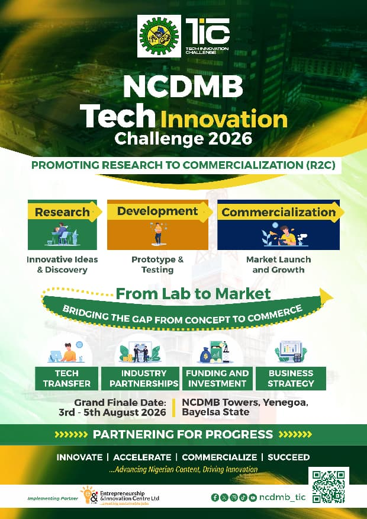

Programme Timeline
From mobilisation to grand finale — every milestone mapped out.
View TimelineNCDMB Maiden Programme
A maiden initiative of the Nigerian Content Development & Monitoring Board (NCDMB) — promoting Research to Commercialization (R2C) and bridging the gap from concept to commerce.
From mobilisation to grand finale — every milestone mapped out.
View TimelineMeet the top 15 innovators advancing to the physical bootcamp.
View CompetitorsConnect with innovators and the ERIN community.
Visit PortalDownload the full guide to stages, eligibility, and expectations.
Download GuideThe Tech Innovation Challenge (TIC) is a maiden NCDMB programme promoting Research to Commercialization (R2C) — bridging the gap from concept to commerce for Nigeria's energy innovators.
Advancing Nigerian Content, Driving Innovation. Partnering for Progress.
Learn More About TIC
A clear pathway from discovery to market launch.
Stage 01
Innovative ideas & discovery.
Stage 02
Prototype & testing.
Stage 03
Market launch and growth.
Moving research into usable solutions.
Linking innovators with energy stakeholders.
Pathways to scale high-potential solutions.
Building market-ready ventures.
A competitive multi-stage process from screening to incubation.
Nationwide call and programme activation.
Expert panel selects the top 30 innovators.
Virtual pitches to shortlist 15 DCS competitors.
Four-week structured training with industry mentors.
Intensive physical programme at NCDMB Tower, Yenagoa.
Grand finale: 3–5 August 2026 at NCDMB Towers.
Post-competition support, funding access, and linkages.
Explore the maiden edition programme, DCS competitors, and how to connect with TIC 2026.